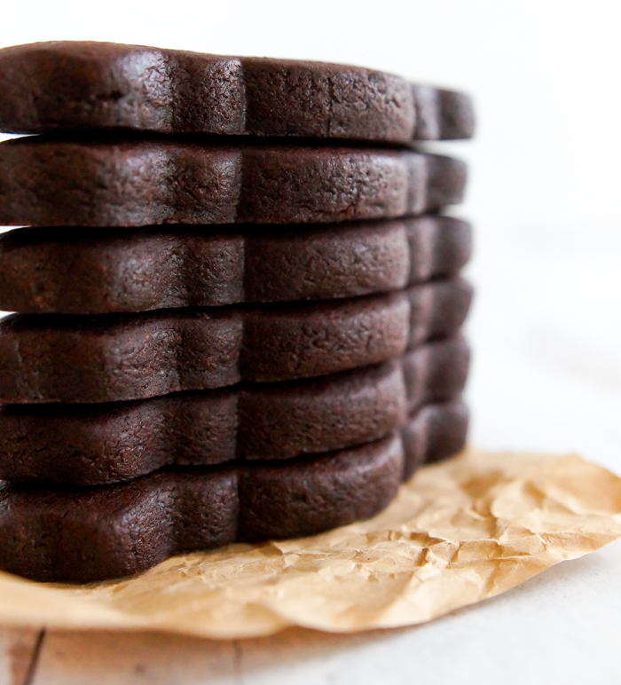

Black Cocoa Cut-Out Cookies

Description:
Making decorated cookies for Halloween? You might want to switch up your usual sugar cookie recipe for something dark and delicious. Black cocoa chocolate cut-out cookies use two types of cocoa powder: Dutch-process and black cocoa. Black cocoa is the secret to the Oreo's deep dark color. The trick is, you can't use too much of it, or your recipe will be bitter. A mix of cocoas is just the ticket.
Ingredients:
- 2 1/2 cups unbleached, all-purpose flour
- 6 tablespoons Dutch-process cocoa
- 2 tablespoons black cocoa
- 2 teaspoons baking powder
- 1/4 teaspoon kosher salt
- 1 cup salted butter, cold and cut into chunks
- 1/2 cup granulated sugar
- 1/2 cup packed light brown sugar
- 1 teaspoon vanilla
- 1 teaspoon espresso powder
- 1 egg
Directions:
- Preheat oven to 350. Line cookie sheets with parchment paper.
- Whisk the flour, cocoa powders, baking powder, and salt together. Set aside.
- Cream the butter and sugars until fluffy and combined. Stir together the vanilla and espresso powder. Beat in with the egg. On low speed, add the flour/cocoa mixture in three additions. Scrape the bottom and sides of the bowl.
- If there are bits of dry flour in the bottom of the bowl, knead the dough together by hand. Wrap in plastic wrap and chill for at least 30 minutes. Dust rolling surface and rolling pin with a mixture of flour and dutch-process cocoa. Roll the dough to a thickness of 3/8". Cut out shapes with a cookie cutter that has been dipped in the cocoa/flour.
- Chill the cut shapes for 5-10 minutes before baking. Bake for 9-14 minutes, depending on cookie cutter size. Let cool on the rack for a minute or two, then remove to a wire rack to cool completely.
- Decorate with royal icing or buttercream.
Home